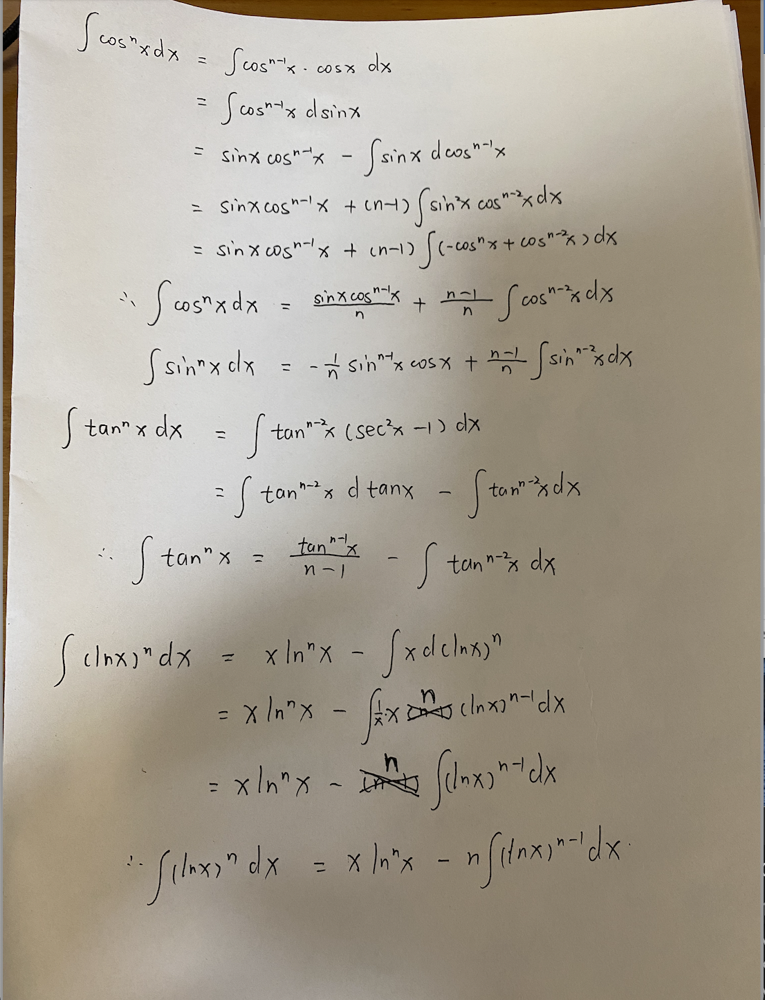

不定积分
其实本来是上个学期的内容，但是由于上个学期期末太懒于是就没有总结这一部分，导致呢其实这部分也快忘得差不多了，于是乎先总结一下。
目前主要与三角函数有关
需要复习的内容
反（三角）函数求导
在此之前我们需要牢记六个反三角函数的定义域与值域，不然会在一些地方出现错误
| 反三角函数 |
定义域 |
值域 |
| arcsinx |
[-1,1] |
[$-\frac{\pi}{2}$,$\frac{\pi}{2}$ ] |
| arccosx |
[-1,1] |
[0,$\pi$] |
| arctanx |
($-\infty$, $\infty$) |
($-\frac{\pi}{2}$,$\frac{\pi}{2}$ ) |
| arccscx |
($-\infty$,-1]U[1,$\infty$) |
[$-\frac{\pi}{2}$,0)U(0,$\frac{\pi}{2}$ ] |
| arcsecx |
($-\infty$,-1]U[1,$\infty$) |
[0,$\frac{\pi}{2}$)U(0,$\pi$] |
| arccotx |
[$-\infty$, $\infty$] |
(0,$\pi$) |
为什么这么说呢，在推导后续三个反三角函数时就知道定义域与值域的重要性了
首先我们知道
$$
f(g(x))\ =\ x
\
\frac{dg(x)}{dx}\ =\ \frac{1}{\frac{df(u)}{du}|{u=g(x)}}
$$
所以对于三大反三角函数来说
$$
\frac{d(arcsinx)}{dx}\ = \ \frac{1}{\sqrt{1-x^2}}
\\frac{d(arctanx)}{dx}\ = \ \frac{1}{1+x^2}
\for\ the \ last\ three\ functions:
\\frac{d(arcsecx)}{dx} = \frac{1}{\frac{dsecu}{du}|{u = arcsecx}}
\ = \frac{1}{tanu \times secu}
\here\ we\ know \ that\ u \in [0,\frac{\pi}{2})\cup(0,\pi],\ so:
\tanu \times secu\ \ge 0
\ = \frac{1}{|x|\sqrt{x^2-1}}
$$
求出这几个后我们引入三个恒等式，其实可以很方便的得出其他的倒数啦
$$
arcsinx + arccosx = \frac{\pi}{2}
\arcsecx + arccscx = \frac{\pi}{2}
\arctanx + arccotx = \frac{\pi}{2}
$$
画个直角三角形即可证明，所以接下来的导数就可以用这几个恒等式推出：
$$
\frac{d(arccscx)}{dx} = -\frac{1}{|x|\sqrt{x^2-1}}
\\frac{d(arccotx)}{dx} = -\frac{1}{1+x^2}
$$
三角函数和差化积与积化和差公式
在不定积分的计算中，积化和差公式是重要的，因为很多时候积化和差可以把三角函数的乘积/次方变为简单的加法
$$
sin\alpha sin\beta = \frac{1}{2}[sin(\alpha + \beta) + sin(\alpha - \beta)]
\cos\alpha sin\beta = \frac{1}{2}[sin(\alpha + \beta) - sin(\alpha - \beta)]
\cos\alpha cos\beta = \frac{1}{2}[cos(\alpha + \beta) + cos(\alpha - \beta)]
\sin\alpha sin\beta = \frac{1}{2}[cos(\alpha - \beta) + cos(\alpha + \beta)]
$$
其实最重要的是看到三角函数的乘积或者是次方，要有意识的把他们用积化和差或者是倍角公式转换为和的形式
分部积分法
其实最需要总结的还是这一块，毕竟去年没有用也没有好好体会
$$
note\ u\ as\ u(x)
\ note\ v\ as\ v(x)
\\int udv = uv - \int vdu
$$
证明：
$$
(uv)' = u'v + v'u
\\int (uv)'dx = \int u'vdx + \int v'udx
\\int udv + \int vdu = uv
$$
其实不难发现如果所求不定积分中有存在x的乘积式，那大概率要用到分部积分法了，而分部积分法的本质是利用莱布尼茨对于导数的表达式来消去不定积分中的dx项。并且含有三角函数以及自然指数函数都是分部积分法的常客
换元积分法积分策略
- $\int \frac{dx}{x^2 - a^2}$：
$$
Normally\ we\ would\ use\ subtitution, but:
\\begin{aligned}
&\int \frac{dx}{x^2 - a^2}
\ = &\int \frac{dx}{(x-a)(x+a)}
\ = &\int \frac{1}{2a} (\frac{1}{x-a} - \frac{1}{x+a})dx
\ = &\frac{1}{2a}\int \frac{1}{x-a}d(x-a) - \frac{1}{2a}\int \frac{1}{x+a}d(x+a)
\ = &\frac{1}{2a}(\ln|x-a| - \ln|x+a|) + C
\end{aligned}
$$
- $\sin^m(x)\cos^n(x)$
$$
When\ m = 2k+1:
\subtitute \cos(x)\ with\ u
\\ \ \ \
\When\ n = 2k+1:
\subtitute \sin(x)\ with\ u
\\ \ \ \ \
\When\ both\ is\ odd,try\ to\ use:
\ \sin^2x = \frac{1}{2}(1 - \cos(2x))
\ \cos^2x = \frac{1}{2}(1 + \cos(2x))
$$
- $\tan^mx\sec^nx$
$$
When\ n = 2k:
\subtitute\ u = \tan x
\\ \ \ \ \
\When\ m = 2k - 1:
\subtitute\ u = \sec x
\\ \ \
\ \tan^2 x + 1 = \sec^2 x
$$
- $\int \sec x dx\ or\ \int \csc x dx$
$$
The\ easist\ way:
\\begin{aligned}
\frac{d\sec x}{dx} &= \sec x \tan x;\ \ \frac{d\tan x}{dx} = \sec^2x
\\frac{d\csc x}{dx} &= \csc x \cot x;\ \ \ \frac{d\cot x}{dx} = -\csc^2x
\end{aligned}
\So:
\\begin{aligned}
\int \sec x dx&= \int \frac{\sec x (\sec x +\tan x)}{\sec x +\tan x}dx
\ &= \int \frac{1}{\sec x+\tan x} d(\sec x + \tan x)
\&= \ln |\sec x + \tan x| + C
\\int \csc x dx&= \int \frac{\csc x (-\csc x +\cot x)}{-\csc x +\cot x}dx
\ &= \int \frac{1}{-\csc x+\cot x} d(-\csc x + \cot x)
\&= \ln |-\csc x + \cot x| + C
\end{aligned}
\ \ \ \ \
\Or\ we\ could\ consider:
\ \sec x = \frac{\cos x}{\cos^2 x}
\ \csc x = \frac{\sin x}{\sin^2 x}
\So:
\ \int \frac{\cos x}{\cos^2 x}dx = \int \frac{d\sin x}{1-\sin^2x}dx
\which \ already\ be\ mentioned\ in \ 1
\\ \ \ \ \
\Especially\ for\ \csc x:
\\sin x = 2\sin\frac{x}{2}\cos\frac{x}{2}
\\begin{aligned}
\int \csc x dx &= \int \frac{1}{2\sin\frac{x}{2}\cos\frac{x}{2}}dx
\ &= \int \frac{d\frac{x}{2}}{\tan\frac{x}{2}\cos^2\frac{x}{2}}dx
\ &= \int \frac{d\tan\frac{x}{2}}{\tan \frac{x}{2}}dx
\ &= \ln |\tan\frac{x}{2}|+C
\end{aligned}
\ \ \ \
\So,\ we\ can\ know:
\\tan\frac{x}{2} = \csc x - \cot x
\ \frac{1-\cos x}{1+\cos x} = \csc x - \cot x
\ \frac{1-\sin x}{1+\sin x} = \sec x + \tan x
\ \frac{1+\tan x}{1+\tan x} = \sec x + \tan x
$$
- $\int \frac{x^2}{x^2+1}dx$
$$
\begin{aligned}
&\int \frac{x^2}{x^2+1}dx
\ = &\int \frac{x^2+1-1}{x^2+1}dx
\ = &\int (1 - \frac{1}{1+x^2})dx
\ = &x - \arctan x + C
\end{aligned}
$$
降次积分法
通常看到所求积分中含有幂指数，而幂指数是一个以字母代替的常量，此时我们需要用到降次积分法。其核心为推导系数为n时的表达式，通常表达式右边含有n-1或者n+1等。然后从这个表达式中再次剥离出n挪到等式左边。从而得到表达式。并且绝大多数情况下降次积分会与分步积分一起使用。
由于时间紧迫（博主太懒），于是奉上手写体的完全推导过程：

数列与级数
数列与级数基础
正项级数
正项级数(Nonnegative series)，指的是每一项都是正项或者是零的级数，首先我们来总结这种级数的审敛法(Test for convergent)
- 正项级数收敛的充分必要条件(necessary and suffcient condition)
$$
\sum_{n=1}^{\infty} u_n\ is\ convergent\ if\ and\ only\ if:
\\lim_{n \rightarrow\infty}S_n = l\ (0\leq l < \infty)
\Also\ it\ means\ {S_n}\ is\ convergent
$$
- 比较审敛法(comparsion test)
$$
We\ note\ two\ nonnegative\ series:
\\sum_{n=1}^{\infty}u_n\ and\ \sum_{n=1}^{\infty}v_n\ (u_n \leq v_n\ &\ n = 1,2,3...)
\if\ \sum_{n=1}^{\infty}v_n\ is\ convergent\ then\ \sum_{n=1}^{\infty}u_n\ is\ convergent
\if\ \sum_{n=1}^{\infty}u_n\ is\ divergent\ then\ \sum_{n=1}^{\infty}v_n\ is\ divergent
\\ \ \
\We\ can\ also\ have\ an\ inference:
\if\ \sum_{n=1}^{\infty}v_n\ is\ convergent
\ and\ we\ have\ an\ integer\ N,\ when\ n \geq N\ and\ u_n\leq kv_n\ (k > 0)
\then\ \sum_{n=1}^{\infty}u_n\ is\ convergent
\if\ \sum_{n=1}^{\infty}v_n\ is\ divergent
\ and\ we\ have\ an\ integer\ N,\ when\ n \geq N\ and\ u_n \geq kv_n\ (k > 0)
\then\ \sum_{n=1}^{\infty}u_n\ is\ divergent
\\ \ \ \ \
\ We\ can\ think\ about\ the\ proof\ of\ that\ inference:
\ if\ \sum_{n=1}^{\infty}v_n\ is\ convergent\ then\ after\ removing\ finite\ terms\ it's\ still\ convergent
\ also\ if\ we\ multiply\ constant\ number\ for\ each\ terms\ still\ convergent
\ \ \ \
\So\ it's\ obvious\ for\ the\ first\ half\ part\ of\ the\ inference
\ and\ as\ the\ same\ way\ for\ the\ last\ half\ part
$$
- 比较审敛法的极限形式(limit comparsion test)
$$
We\ note\ two\ nonnegative\ series:
\\sum_{n=1}^{\infty}u_n\ and\ \sum_{n=1}^{\infty}v_n
\ \ \ \
\if\ \lim_{n\rightarrow\infty}\frac{u_n}{v_n} = l\ (0\leq l<\infty)\ and\ \sum_{n=1}^{\infty}v_n\ is\ convergent
\ then\ \sum_{n=1}^{\infty}u_n\ is\ convergent
\if\ \lim_{n\rightarrow\infty}\frac{u_n}{v_n} = l\ (l>0\ or\ l=\infty)\ and\ \sum_{n=1}^{\infty}v_n\ is\ divergent
\ then\ \sum_{n=1}^{\infty}u_n\ is\ divergent
$$
- 比值审敛法(d'Alembert comparsion test)
$$
We\ note\ \sum_{n=1}^{\infty}u_n\ as\ a\ nonnegative\ series
\if\ \lim_{n\rightarrow\infty}\frac{u_{n+1}}{u_n} = \rho
\if\ \rho < 1\ then\ it's\ convergent\ if\ \rho > 1\ then\ it's\ divergent
\ need\ to\ clarify\ when\ \rho = 1\ we\ can't\ sure\ it's\ convergence
$$
- 根植审敛法(Cauchy's test)
$$
We\ note\ \sum_{n=1}^{\infty}u_n\ as\ a\ nonnegative\ series
\if\ \lim_{n\rightarrow\infty}\sqrt[n]{u_n} = \rho
\ if\ \rho < 1\ then\ it's\ convergent\ if\ \rho > 1\ then\ it's\ divergent
\ need\ to\ clarify\ when\ \rho = 1\ we\ can't\ sure\ it's\ convergence
$$
- 极限审敛法(limit test)
$$
We\ note\ \sum_{n=1}^{\infty}u_n\ as\ a\ nonnegative\ series
\if\ \lim_{n\rightarrow\infty}nu_n = l>0\ then\sum_{n=1}^{\infty}u_n\ is\ divergent
\if\ \lim_{n\rightarrow\infty}n^pu_n = l\ (0 \leq l<\infty\ and\ p>1)\ then\sum_{n=1}^{\infty}u_n\ is\ convergent
\ \ \ \
\We\ can\ prove\ it\ simply\ by\ the\ the\ comparsion\ test\ for\ convergent
\comapre\ with\ the\ p-series:
\\sum_{n=1}^{\infty} \frac{1}{n^p}
\when\ 0<p \leq 1\ then\ it's\ divergent
\when\ p>1\ then\ it's\ convergent
$$
交错级数
交错级数(alternating series)指各项正负交错的级数，其审敛法：
- 莱布尼茨定理(Leibniz's theorem)
$$
We\ note\ an\ alternating\ series\ as\ \sum_{n=1}^{\infty}(-1)^{n-1}u_n
\if\ u_n \geq u_{n+1}\ (n = 1,2,3...)
\and\ \lim_{n\rightarrow \infty}u_n = 0
\then\ \sum_{n=1}^{\infty}(-1)^{n-1}u_n\ is\ convergent
\\ \ \ \
\We\ could\ discuss\ further\ about\ it's\ partial\ sum\ when\ it's\ convergent:
\S_{2n} = (u_1 - u_2) + (u_3 - u_4) + ... +(u_{2n-1} - u_{2n}) \geq0
\S_{2n} = u_1 - (u_2 - u_3) - (u_4 - u_5) - ...-(u_{2n-2} - u_{2n-1}) - u_{2n} \leq u_1
\S_{2n+1} = S_{2n} + u_{2n+1}
\when\ n\ is\ large\ enough\ S_{2n+1} = S_{2n} + 0 = S_{2n}
\So\ we\ could\ know\ \sum_{n=1}^{\infty} (-1)^{n-1}u_n \rightarrow s \leq u_1
\\ \ \ \ \
\Further,\ if\ we\ discuss\ remainder\ sum\ for\ S_{n}\ and\ note\ as\ R_{n}:
\R_{n} = \sum_{i=n+1}^{\infty}u_i= \pm(u_{n+1} - u_{n+2}+...)
\|R_{n}| = u_{n+1} - u_{n+2} + ...
\so\ we\ find\ it's\ still\ a\ alternating\ series\ same\ as\ u_{n}
\|R_{n}| \leq u_{n+1}
$$
绝对收敛与条件收敛
我们定义一个普通级数：$\sum_{n=1}^{\infty}u_{n}$
绝对收敛(absolute convergence)：$\sum_{n=1}^{\infty}|u_{n}|$ 收敛
条件收敛(conditional convergence)：$\sum_{n=1}^{\infty}u_{n}$ 收敛，并且$\sum_{n=1}^{\infty}|u_{n}|$ 发散
- 级数绝对收敛与级数收敛的关系
$$
if\ \sum_{n=1}^{\infty}u_{n}\ is\ absolute\ convergent\ then\ \sum_{n=1}^{\infty}u_{n}\ is\ convergent
$$
- 级数的柯西乘积(Cauchy's product)
$$
We\ have\ two\ series\ \sum_{n=1}^{\infty}u_n\ and\ \sum_{n=1}^{\infty}v_n\ and\ Cauchy's product\ is\ C
\C = \sum_{i=1}^{n}\sum_{j=1}^{i}u_jv_{n+1-j}
\\ \ \ \ \
\Further,\ if\ both\ are\ absolute\ convergent\ and:
\\sum_{n=1}^{\infty}u_n\rightarrow s\ and\ \sum_{n=1}^{\infty}v_n\rightarrow \sigma
\the\ Cauchy's\ product\ is\ still\ absolute\ convergent\ which:
\ C\rightarrow s\sigma
$$
幂级数
首先是幂级数的定义(defination of power series)
$$
\sum_{n=1}^{\infty}a_nx^n = a_0 + a_1x + a_2x^2+...
\which\ a_n\ are\ called\ coefficients\ of\ the\ power\ series
\\ \ \ \
\Also,\ we\ could\ note\ as\ a\ more\ general\ way:
\\sum_{n=1}^{\infty}c_n(x-a)^n
\and\ a\ function\ which\ domain\ is\ all\ the\ x\ makes\ series\ convergent:
\f(x) = \sum_{n=1}^{\infty}c_n(x-a)^n\ or\ \sum_{n=1}^{\infty}a_nx^n
\\ \ \ \ \
\Further,\ the\ first\ n\ terms\ we\ note\ as\ f_n(x)
\\lim_{n\rightarrow\infty}f_n(x) = f(x)
\And\ remainder\ sum\ r_n(x):
\r_n(x) = s(x) - s_n(x)
\\lim_{n\rightarrow\infty}r_n(x) = 0
$$
值得一提的是根据课本上的定义，和函数$f(x)$的定义域是幂级数的收敛域，而幂级数其实还有发散域。接下来介绍一下幂级数的审敛定理：
- 阿贝尔定理(Abel's theorem)
$$
We\ have\ a\ series\ \sum_{n=0}^{\infty}a_nx^n\ it's\ convergent\ at\ x = x_0\ (x_0 \neq 0)
\For\ |x|<|x_0|,\ the\ series\ will\ be\ absoluting\ convergent
\We\ have\ a\ series\ \sum_{n=0}^{\infty}a_nx^n\ it's\ divergent\ at\ x = x_0\ (x_0 \neq 0)
\For\ |x|>|x_0|,\ the\ series\ will\ be\ divergent
\ \ \ \ \
\We\ could\ consider\ the\ proof\ of\ first\ part:
\as\ it's\ convergent\ then: \lim_{n\rightarrow\infty}a_nx_0^n = 0
\also\ we\ could\ know\ there\ will\ definitely\ exist\ a\ number\ M:
\|a_nx_0^n|\leq M
\for\ |x| < |x_0|:
\|a_nx^n| = |a_nx_0^n|\times |\frac{x^n}{x_0^n}|\leq M|\frac{x^n}{x_0^n}|
\Obviously\ \sum_{n=0}^{\infty}M|\frac{x^n}{x_0^n}|\ is\ convergent\ so\ we\ prove\ the\ theorem
\\ \ \ \
\For\ the\ second\ part\ we\ could\ use\ rebuttal\ method:
\if\ for\ |x|>|x_0|\ the\ series\ is\ convergent,\ according\ to\ the\ first\ part:
\when\ x = x_0\ should\ also\ be\ convergent\ which\ is\ opposite\ from\ the\ condition
$$
- 阿贝尔定理的推论:
$$
For\ a\ power\ series\ \sum_{n=0}^{\infty}a_nx^n:
\if\ it's\ not\ only\ be\ convergent\ either\ just\ on\ x=0\ or\ any\ x on\ the\ number\ axis
\then\ there\ will\ definitely\ occur\ a\ positive\ number\ R:
\when\ |x| < R\ the\ series\ is\ absoluting\ convergent;
\when\ |x| > R\ the\ series\ is\ divergent;
\when\ |x| = R\ we\ can't\ sure\ whether\ it's\ convergent\ or\ divergent.
\\ \ \ \
\which\ R\ is\ called\ radius\ of\ convergence
$$
- 有关收敛半径计算(radius of convergence)
$$
For\ two\ terms\ a_n,a_{n+1}\ in\ \sum_{n=0}^{\infty}a_nx^n:
\\lim_{n\rightarrow \infty}|\frac{a_{n+1}}{a_n}| = \rho
\we\ have:
\R=\left{
\begin{aligned}
\frac{1}{\rho},\ \ \ &\rho \neq0 \
+\infty,\ \ \ &\rho = 0 \
0,\ \ \ &\rho = +\infty
\end{aligned}
\right.
\ \ \ \ \
\Consider\ |\frac{a_{n+1}x^{n+1}}{a_nx^n}| = |\frac{a_{n+1}}{a_n}|\times|x_n|:
\\lim_{n\rightarrow\infty}|\frac{a_{n+1}x^{n+1}}{a_nx^n}| = \lim_{n\rightarrow\infty}|\frac{a_{n+1}}{a_n}|\times\lim_{n\rightarrow\infty}|x_n| = \rho\times |x_n|
\then\ according\ to\ d'Alembert\ comparsion\ test\ of\ convergence:
\when\ \rho\times |x_0|<1\ which\ means\ |x_0|<\frac{1}\rho\ the\ series\ is\ convergent
\Very\ important:
\the\ series\ here\ is\ \sum_{n=0}^{\infty}|a_nx^n|
\\ \ \ \
\Further,\ according\ to\ the\ comparsion\ test:
\a_nx^n\leq|a_nx^{n}|
\so\ when\ |x_0|<\frac1\rho\ the\ \sum_{n=1}^\infty a_nx^n\ is\ convergent
\when\ |x_0|>\frac1\rho\ the\ \sum_{n=1}^{\infty}|a_nx^n|\ is\ divergent,\ according\ to\ the\ former\ limit\ comparsion:
\from\ a\ number\ n\ we\ have:\ |a_{n+1}|>|a_n|
\so\ for\ both\ |a_n|\ and\ a_n\ will\ not\ approach\ to\ 0
\so\ \sum_{n=0}^\infty a_nx^n\ is\ divergent
\ \ \ \
\Attention \ !\ !\ !\ :
\when\ the\ series\ is\ \sum_{n=1}^\infty (-1)^{n-1}c_n (x-x_0)^n:
\|x-x_0| < \frac{1}{\rho}
\which\ x\in (-R,R)\ etc.
\(proof\ refer\ to\ the\ defination)
$$
- 幂级数的计算
$$
We\ have\ two\ power\ series:
\\sum_{n=0}^\infty a_nx^n\ and\ \sum_{n=0}^\infty b_nx^n
\which\ the\ redius\ of\ convergence\ is\ respectively\ R\ and\ R'
\\ \
\begin{aligned}
Sum &= \sum_{n=0}^\infty (a_n+b_n)x^n
\Difference &= \sum_{n=0}^\infty (a_n-b_n)x^n
\Cauchy's\ Product &= \sum_{i=0}^{n}(x^i\sum_{j=0}^{i}a_jb_{n+1-j})
\end{aligned}
\above\ radius\ of\ convergence\ is\ \min(R,R')
\\ \ \ \
\Especially\ for\ division:
\\frac{\sum_{n=0}^\infty a_nx^n}{\sum_{n=0}^\infty b_nx^n} = \sum_{n=0}^\infty c_nx^n
\we\ know\ that:
\\begin{aligned}
a_0 &= b_0c_0
\a_1 &= b_1c_0+b_0c_1
\a_2 &= b_2c_0+b_1c_1+b_0c_2
\end{aligned}
\\cdots
\but\ we\ could\ not\ determine\ the\ radius\ of\ convergence\ of\ \sum_{n=0}^\infty c_nx^n
$$
- 幂级数的和函数的运算(derivatives and integrals of sum function)
$$
We\ note\ \sum_{n=1}^\infty a_nx^n\ and\ s(x)\ as\ a\ power\ series\ and\ it's\ sum\ function
\In\ its\ convergence\ domain\ I:
\\int_0^x s(t)dt = \int_0^x\sum_{n=0}^\infty a_nt^n dt = \sum_{n=0}^\infty \int_0^x a_nt^ndt = \sum_{n=0}^\infty \frac{a_n}{n+1}x^{n+1}
\the\ redius\ of\ convergence\ is\ same
\\ \ \ \
\s'(x) = (\sum_{n=0}^\infty a_nx^n)' = \sum_{n=0}^\infty (a_nx^n)' = \sum_{n=0}^\infty na_nx^{n-1}
\the\ redius\ of\ convergence\ is\ same
$$
函数的展开
写在最前
下文 “3.拉格朗日余项” 的证明提到了积分第一中值定理，其表述为：
函数$f(x)$在闭区间[a,b]上连续，$g(x)$在[a,b]上不变号且可积，则在闭区间上至少存在一点$\xi$:
$$
\int_{a}^{b}f(x)g(x)dx = f(\xi)\int_a^b g(x)dx
$$
事实上这个区间也可以是开区间，证明过于复杂，链接如下：https://zh.m.wikipedia.org/zh-hans/%E7%A7%AF%E5%88%86%E7%AC%AC%E4%B8%80%E4%B8%AD%E5%80%BC%E5%AE%9A%E7%90%86
展开的推导
- 函数的泰勒展开(Taylor expand)
$$
We\ have\ a\ power\ series\ \sum_{n=0}^\infty a_n(x-x_0)^n\ which\ is\ convergent\ in\ U(x_0)
\then\ we\ know\ it's\ sum\ function:
\
\begin{aligned}
f(x) &= \sum_{n=0}^\infty (x-x_0)^n
\f^{(n)}(x) &= \sum_{i=n}^\infty i!a_i(x-x_0)^{i-n}
\end{aligned}
\
\begin{aligned}
when\ x = x_0:
\f^{(n)}(x_0) = n!a_n
\end{aligned}
\\ \
\begin{aligned}
thus\ for\ n=0,1,2\cdots
\end{aligned}
\a_n = \frac{1}{n!}f^{(n)}(x_0)
$$
- 函数的麦克劳林级数(McLaughlin's series)
$$
We\ know\ in\ Taylor\ expand:
\f(x) = \sum_{n=0}^\infty \frac{f^{(n)}(x_0)}{n!}(x-x_0)^n\ \ x\in(-R,R)
\when\ x_0 = 0:
\f(x) = \sum_{n=0}^\infty\frac{f^{(n)}(0)}{n!}x^n\ \ x\in(-R,R)
$$
- 函数泰勒展开的拉格朗日余项(Lagrange remainder)
$$
\begin{aligned}
f(x) &= \sum_{i=0}^\infty \frac{f^{(i)}(x_0)}{i!}(x-x_0)^i
\&= \sum_{i=0}^n \frac{f^{(i)}(x_0)}{i!}(x-x_0)^i + R_n(x)
\end{aligned}
\Get\ the\ n\th\ dervative:
\f^{(n)}(x) = f^{(n)}(x_0) + R_n^{(n)}(x)
\and\ according\ to\ the\ Lagrange's\ mean\ value\ theorem:
\f^{(n+1)}(\theta x)(x-x_0) = f^{(n)}(x) - f^{(n)}(x_0)
\so:
\\begin{aligned}
R_n^{(n)}(x) &= f^{(n+1)}(\theta x)(x-x_0)
\R_n^{(n-1)}(x) &= \int_{0}^{x} R_n^{(n)}(x)
\ &= \int_{0}^{x}f^{(n+1)}(\theta x)(x-x_0)
\end{aligned}
\according\ to\ First\ mean\ value\ theorem\ for\ definite\ integrals:
\R_n{(x)} = \frac{f^{(n+1)}(\theta x)(x-x_0)^{n+1}}{(n+1)!}
$$
常见函数的展开与策略
我们经常会要求求某一价的函数展开式，即x的幂系数，此时我们要善于利用目标函数的展开式，目标函数导数的函数展开式（通过不定积分可以得到目标函数），目标函数不定积分的表达式（通过求导可以得到目标函数）。不要拘泥于目标函数，尤其是展开式不含所求阶时。下面我们总结函数的展开式：